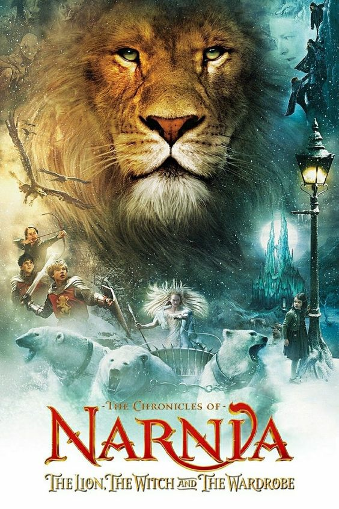
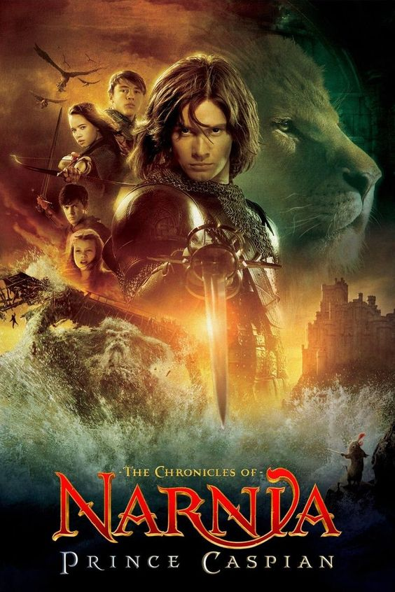
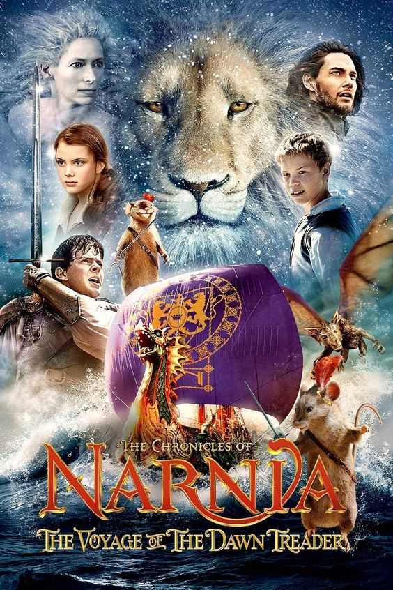

Based on the first book in the series, this film follows the adventures of the Pevensie siblings as they discover the magical land of Narnia and join forces with Aslan to defeat the White Witch.



